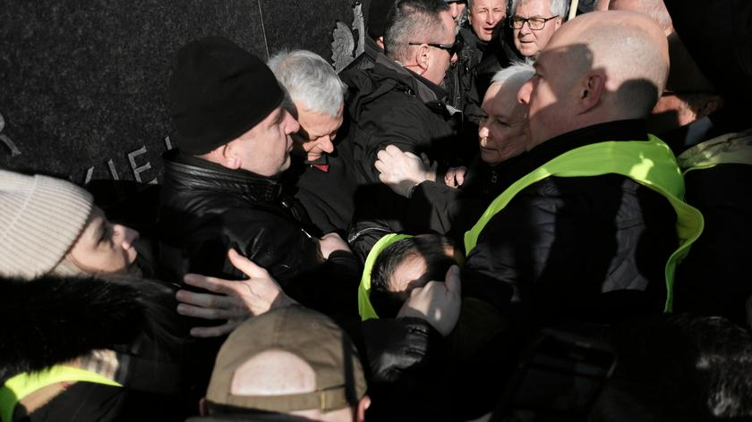

Tkaczyk News
SERWIS INFORMACYJNY
Przepychanki podczas miesięcznicy katastrofy Smoleńskiej
W kolejną miesięcznicę katastrofy smoleńskiej z 10 kwietnia 2010 r. delegacja polityków PiS z prezesem partii Jarosławem Kaczyńskim na czele pojawiła się pod pomnikami prezydenta Lecha Kaczyńskiego i Ofiar Tragedii Smoleńskiej 2010 roku na placu Piłsudskiego w Warszawie. Zamiast policji na miejscu pojawiły się dziesiątki osób z żółtymi kamizelkami z podpisem "Służba porządkowa 2024". Teren wokół pomnika smoleńskiego został odgrodzony słupkami i taśmą. Zamieszenia nie dało się jednak uniknąć. Zbigniew Komosa, warszawski przedsiębiorca składający w każdą miesięcznicę katastrofy smoleńskiej wieniec, zapytany przez Polską Agencję Prasową o niedzielne wydarzenia na pl. Piłsudskiego, powiedział, że nie zadziało się nic nowego. - Jak zwykle, miał być przeprowadzony przemocowy atak na wieniec, który obywatele składają tu co miesiąc. Tym razem w wykonaniu posłów PiS - Marka Suskiego i Jarosława Kaczyńskiego - na ich nieszczęście uniemożliwiliśmy im to - powiedział przedsiębiorca.- Staliśmy przy wieńcu, 'straż porządkowa 2024' próbowała nas stąd przepchnąć. Nie podobało im się to, że wieniec trafił pod pomnik - relacjonował. Przypomnijmy, że na tabliczce dołączonej do wieńca widnieje napis: "Pamięci 95 ofiar Lecha Kaczyńskiego, który ignorując wszelkie procedury nakazał pilotom lądować w Smoleńsku w skrajnie trudnych warunkach. Spoczywajcie w pokoju. Naród Polski". Dodał, że następnie poseł PiS Marek Suski próbował zabrać wieniec. - Uniemożliwiono mu to. Było tłoczno i zrobiło się niebezpiecznie - dodał Komosa. W sieci pojawiło się nagranie z incydentu. Widać na nim grupę przepychających się osób z Jarosławem Kaczyńskim w środku. Komosa zapewnił, że nikt z ruchu nie zamierzał nikogo atakować. - Atak przyszedł z drugiej strony. Wychodzi na to, że przez te sześć lat, gdy policja odgradzała nas w parku Saskim, trzymała nas w kordonach, i odgradzała nas od placu Piłsudskiego, kiedy Jarosław Kaczyński tu przychodził, to wychodzi na to, że policja chroniła nas przed Kaczyńskim, a nie Kaczyńskiego przed nami - stwierdził.
25.02.2024, 21:37